For ACT Students
The ACT is a timed exam...60 questions for 60 minutes
This implies that you have to solve each question in one minute.
Some questions will typically take less than a minute a solve.
Some questions will typically take more than a minute to solve.
The goal is to maximize your time. You use the time saved on those questions you
solved in less than a minute, to solve the questions that will take more than a minute.
So, you should try to solve each question correctly and timely.
So, it is not just solving a question correctly, but solving it correctly on time.
Please ensure you attempt all ACT questions.
There is no negative penalty for a wrong answer.
For SAT Students
Any question labeled SAT-C is a question that allows a calculator.
Any question labeled SAT-NC is a question that does not allow a calculator.
For JAMB Students
Calculators are not allowed. So, the questions are solved in a way that does not require a calculator.
Unless specified otherwise, any question labeled JAMB is a question from JAMB Physics
For WASSCE Students: Unless specified otherwise:
Any question labeled WASCCE is a question from WASCCE Physics
Any question labeled WASSCE-FM is a question from the WASSCE Further Mathematics/Elective Mathematics
For NSC Students
For the Questions:
Any space included in a number indicates a comma used to separate digits...separating multiples of three digits from behind.
Any comma included in a number indicates a decimal point.
For the Solutions:
Decimals are used appropriately rather than commas
Commas are used to separate digits appropriately.
Solve all questions.
Show all work.
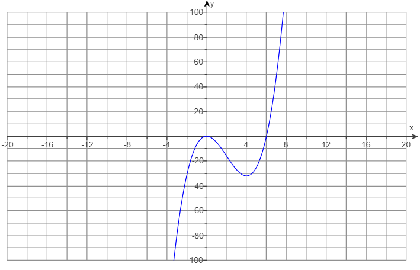
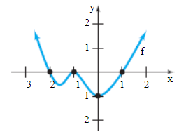
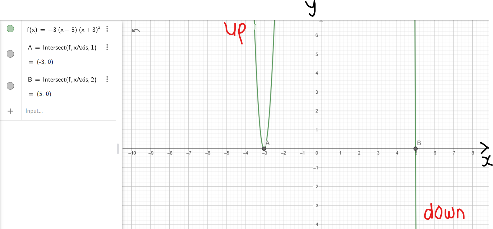
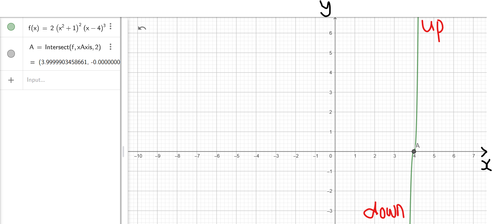
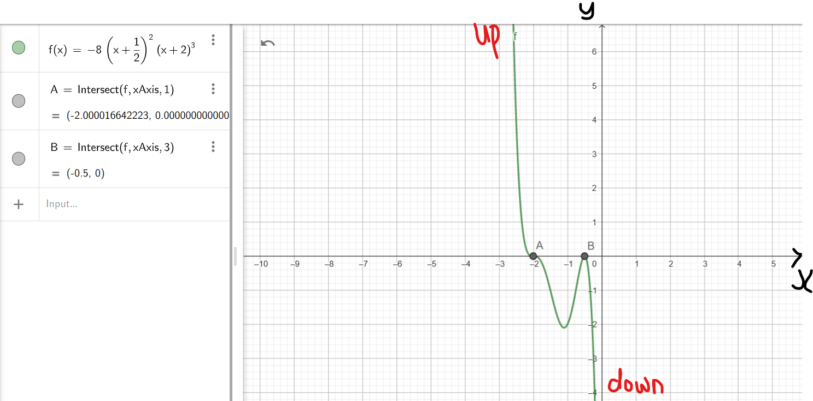
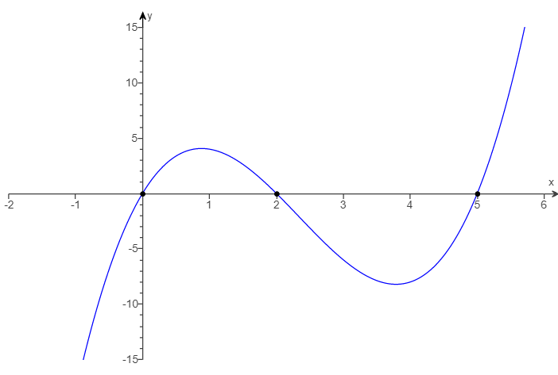
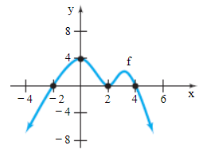
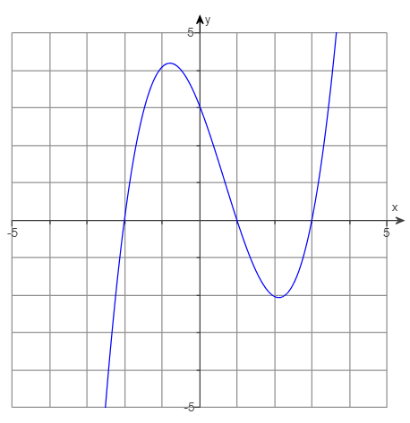
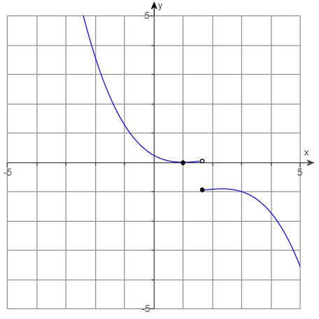
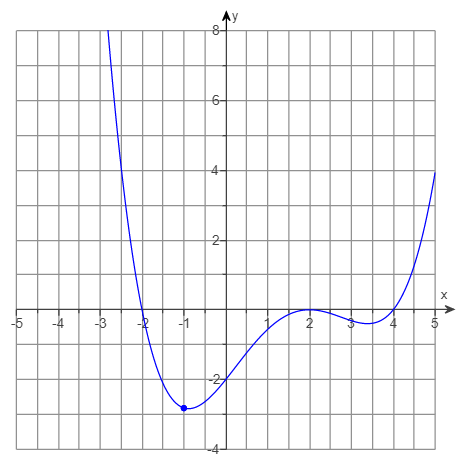
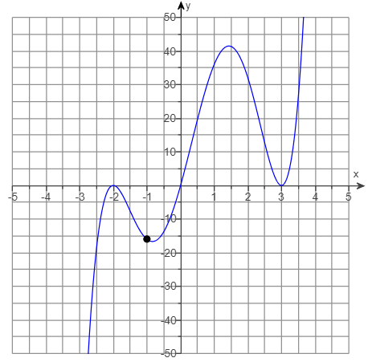
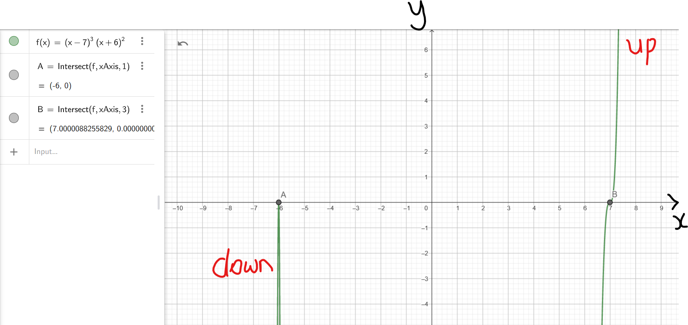
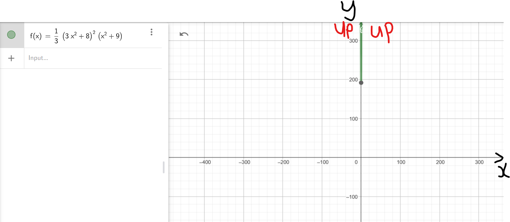
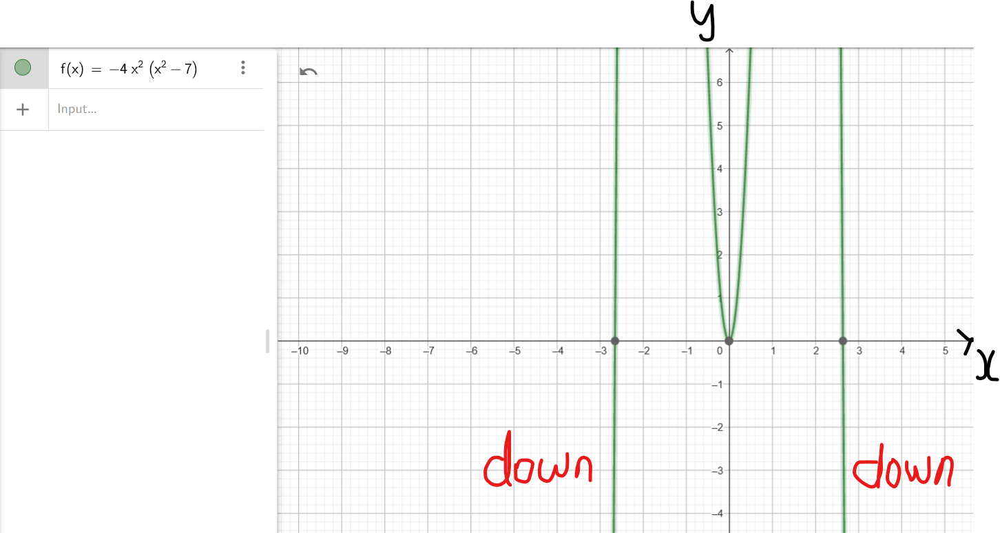